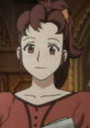

|
Melissa Mao |
- Full Metal Panic!
- Full Metal Panic? Fumoffu
- Full Metal Panic! The Second Raid
- Full Metal Panic! The Second Raid OVA
- Full Metal Panic! The Invisible Victory
|
Melissa Mao is sergeant Major for the organization Mithril. Melissa is very proficient in use of an Arm Slave, however she exacts control. Melissa is a ruthless insulter and an extremely heavy drinker. However, she can be extremely rude and use heavy language. |
 |
Miwako Teshigawara |
- Honey and Clover
- Honey and Clover Specials
- Honey and Clover II
|
Miwako Teshigawara is an employee at Fujiwara Design along with Yamazaki. She owns a dog named Leader that comes to work with her. She and Yamazaki gets into Mayama's love life. |
 |
Riza Hawkeye |
- Fullmetal Alchemist
- Fullmetal Alchemist: The Conqueror of Shamballa
- Fullmetal Alchemist: Reflections
- Fullmetal Alchemist: Premium Collection
|
Riza Hawkeye is Roy Mustang's most trusted subordinate. She acts as his personal assitant. She protect him from further danger. Hawkeye been known to keep cool in a danger situations. Riza specializes in fire arms and sniper rifles. |
 |
Satella Harvenheit |
|
Satella Harvenheit is a Jewel Summoner who works as an independent demon exterminator. She is very rich and appears to be alittle arrogant. She is looking for her older, Florette. Satella has a strong temper and constantly fights with Rosette. She is attracted to young boys and teased Rosette a lot. |
|  |
Sophie |
|
Sophie is the housemistress of Saint Marguerite Academy's male dormitory. She gives Kazuya very hearty meals in the dormitory. She loves the story of Coco Rose. |